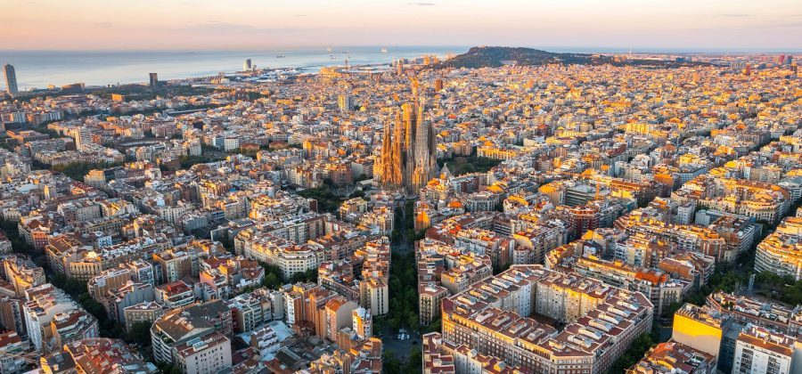

Barcelona
Barcelona is a city on the northeastern coast of Spain. It is the capital and largest city of the autonomous community of Catalonia, as well as the second-most populous municipality of Spain. With a population of 1.6 million within city limits, its urban area extends to numerous neighbouring municipalities within the province of Barcelona and is home to around 4.8 million people, making it the fifth most populous urban area in the European Union after Paris, the Ruhr area, Madrid and Milan. It is one of the largest metropolises on the Mediterranean Sea, located on the coast between the mouths of the rivers Llobregat and Besòs, bounded to the west by the Serra de Collserola mountain range.

press here to return to the home page